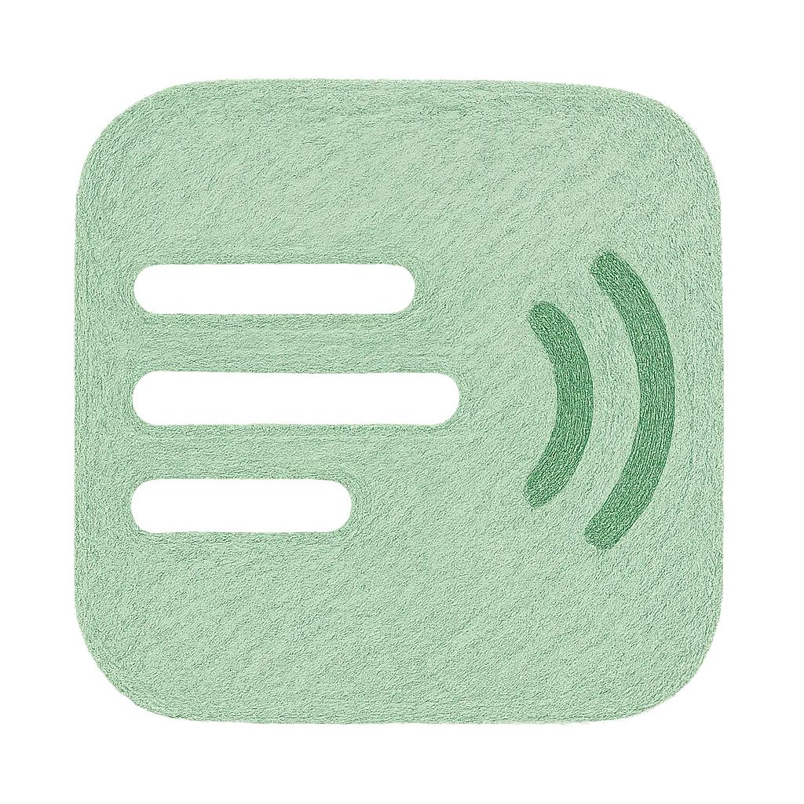
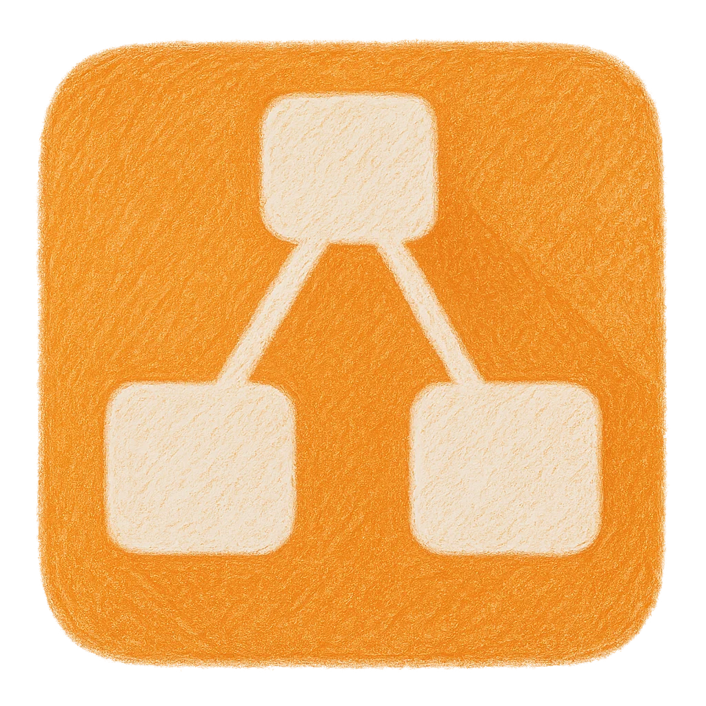
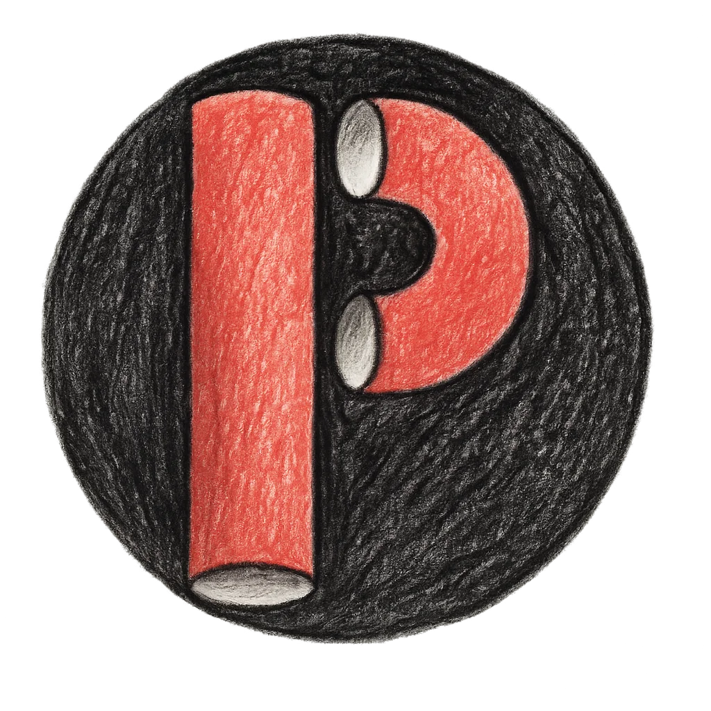

Etherpad
Un éditeur de texte collaboratif en temps réel. Il permet à plusieurs personnes de travailler
simultanément sur un même document, chaque modification étant visible instantanément.
Fonctionnalités
- Édition collaborative en temps réel
- Pas besoin de compte
- Historique des modifications
- Export en différents formats

Draw.io
Un outil de création de diagrammes en ligne puissant et intuitif. Schémas, organigrammes,
diagrammes de flux, plans d'architecture… tout est possible.
Fonctionnalités
- Interface intuitive
- Grande bibliothèque de formes
- Export PNG, PDF, SVG…
- Sauvegarde locale ou cloud

Piped
Une alternative libre et respectueuse de la vie privée à YouTube. Regardez des vidéos sans
publicité, sans pistage, avec une interface épurée.
Fonctionnalités
- Vidéos YouTube sans pub
- Pas de pistage
- Interface simple et rapide
- Téléchargement possible